Как пользоваться Memtest86+
Время от времени я сталкиваюсь с проблемами оперативной памяти. Часто это выражается в странной, нестабильной работе компьютера. Для Windows, например, это синие экраны смерти (BSOD’ы). Для Linux – зависания и резкие перезагрузки. В редких случаях проблемы с оперативной памятью выражаются в битых данных при сохранении файлов, графических артефактах и спектре других странностей.
Чтобы понять, что это действительно проблемы с оперативной памятью, а не что-либо другое, можно воспользоваться тестом оперативной памяти. Существуют разные варианты таких тестов, я предпочитаю пользоваться Memtest86+.
Заметка состоит из 3-х частей:
- В первой разберёмся, как записать USB-флешку с Memtest86+ из Windows.
- Во второй – как подготовить Memtest86+ из Linux
- В третьей – как Memtest86+ запускать и как читать результаты.
Подготовка USB-флешки на Windows
Первым делом отправляемся на сайт Memtest86+. На главной странице есть раздел Download, в котором находятся файлы загрузки. Нас там интересует вариант Windows USB Installer (32/64 bits). Загружаем файл по ссылке.
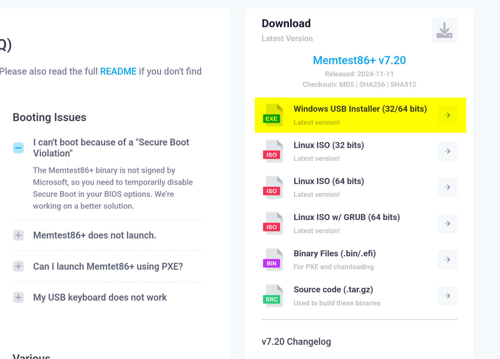
Перед запуском приложения находим USB-флешку и вставляем в порт компьютера. Подойдёт практически любая флешка, Memtest86+ не требует много места. У меня, например, для Memtest86+ выделена вот такая старушка на 64M.
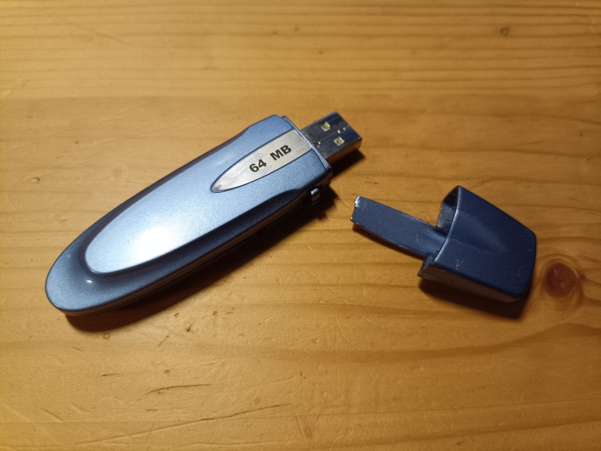
Запускаем установщик и соглашаемся с условиями лицензии GNU/GPLv2 кликнув по кнопке I Agree.
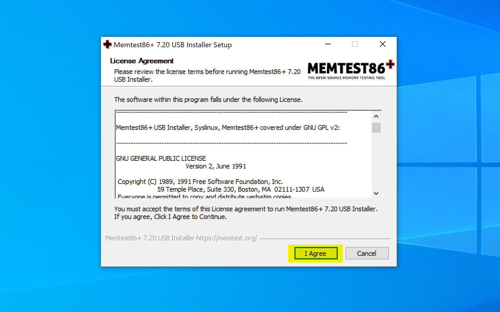
Выбираем USB-флешку из списка. Если USB-флешка у Вас одна, то вариант будет только один, в моём случае так и есть. Только E:\. Если вариантов всё-же несколько, то перепроверьте букву диска, дабы не стереть нужные файлы.
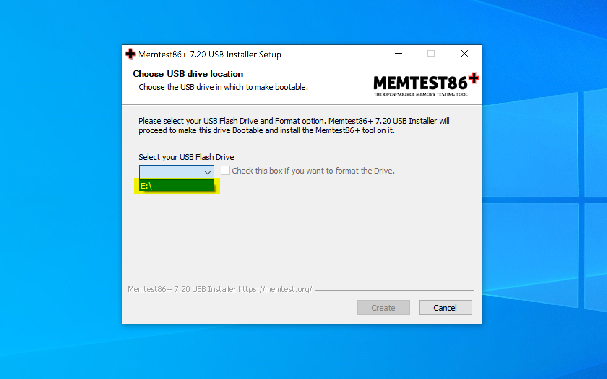
Ставим соответствующую галочку в чекбокс для форматирования флешки.
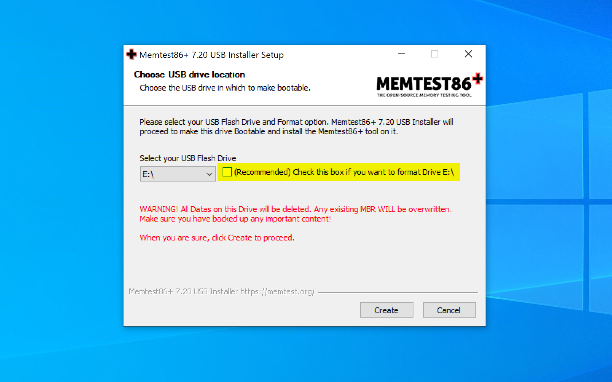
Отдельно подчеркну:
Все данные на USB-флешке будут стёрты в процессе записи Memtest86+! Сделайте копию данных на компьютер, чтобы не потерять важные файлы!
Нажимаем Create для записи на USB-флешку образа Memtest86+.
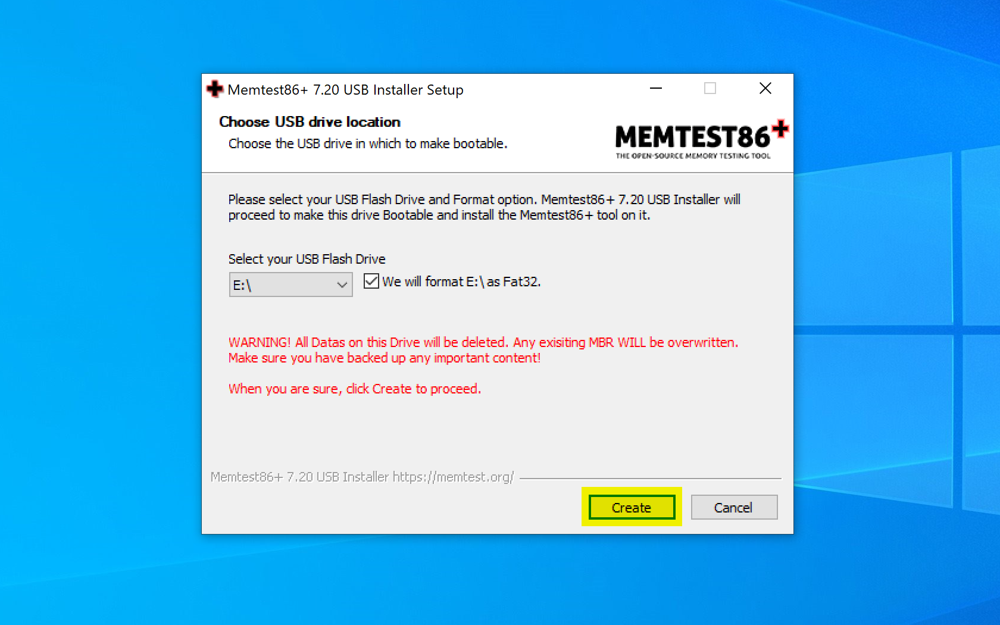
Не вынимайте USB-флешку из порта, пока не завершилась работа установщика!
После окончания записи просто нажимаем Next >.
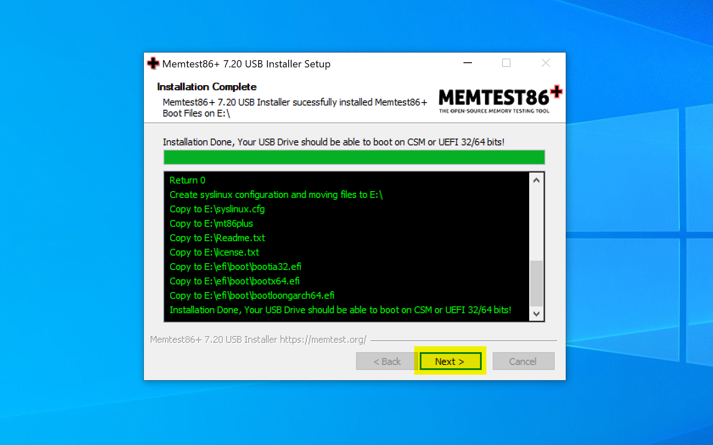
И выходим из установщика, нажав Finish.
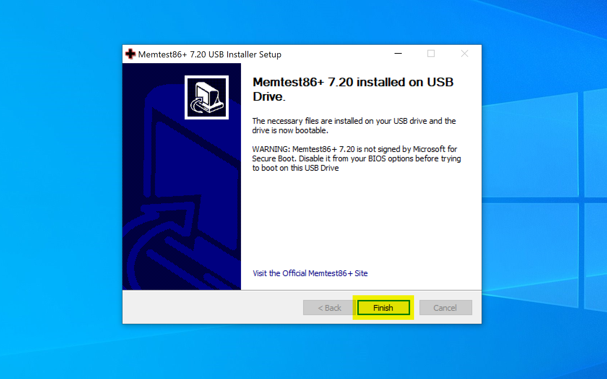
Не забывайте, что USB-флешки нужно безопасно извлекать. Кликаем правой кнопкой мыши по USB-флешке в проводнике и выбираем Извлечь.
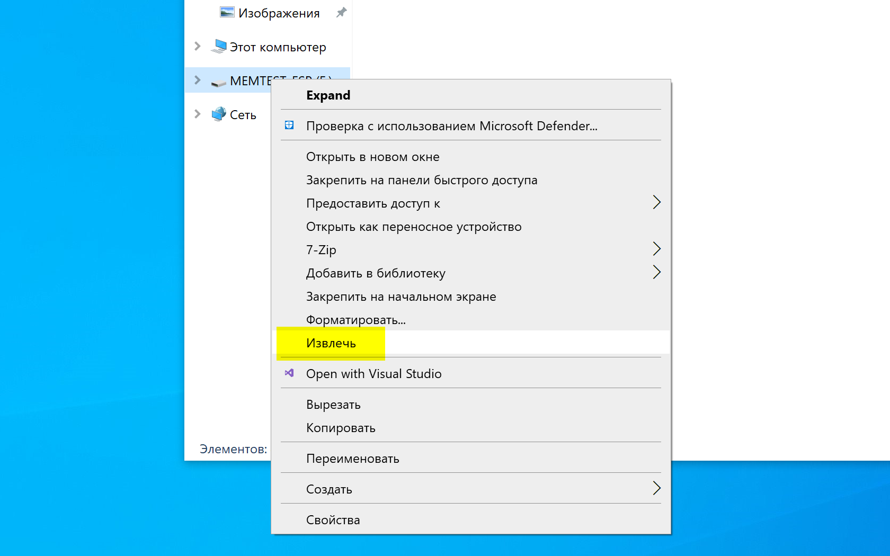
Вот и всё! Можно переходить к запуску Memtest86+.
Подготовка на Linux
Для Linux есть следующие варианты подготовить Memtest86+:
- Взять готовый образ ISO с Memtest86+ на борту
- Установить системный пакет с Memtest86+
- Подготовить USB-флешку
Рассмотрим по порядку.
Готовые Live ISO с Memtest86+
В мире Linux Memtest86+ является определённым стандартом. Таким, что некоторые Live ISO поставляются с Memtest86+ как вариантом загрузки. Вот, например, варианты загрузки для свежего образа Arch.
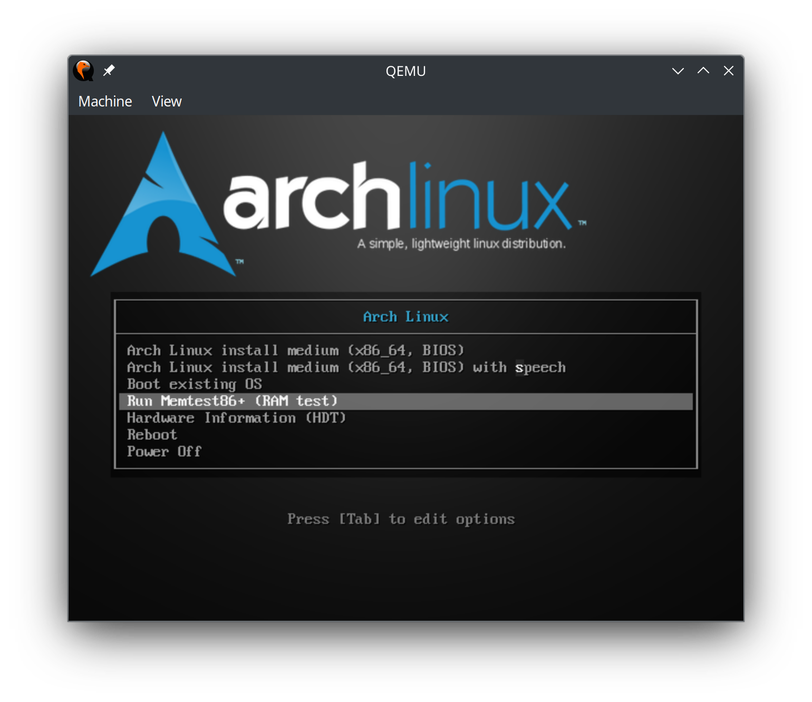
Список ISO образов, которые есть у меня в наличии и имеют Memtest86+ на борту:
- Arch Linux
- Ubuntu
- Linux Mint
- Proxmox
- Даже Dr.Web Live Disk
Если Вы не знаете, есть ли Memtest86+ у ISO образа Вашего любимого дистрибутива, то, при наличии QEMU, быстрый вариант проверки – запустить образ командой:
$ qemu-system-x86_64 -cdrom archlinux.iso
Если образ для i386, то следует использовать qemu-system-i386.
Установка системного пакета
В некоторых дистрибутивах Linux есть вариант установить системный пакет с Memtest86+. В таком случае Memtest86+ станет доступен как одна из опций загрузки GRUB. Удобно, т.к. не требует возни с USB-флешками и устройствами загрузки.
Чтобы найти нужный пакет, рекомендую воспользоваться средствами поиска в Вашем дистрибутиве. У меня в Debian это делается вот так:
$ apt search memtest
Sorting... Done
Full Text Search... Done
memtest86+/stable,now 6.10-4 amd64 [installed]
thorough real-mode memory tester
memtester/stable 4.6.0-1 amd64
Utility for testing the memory subsystem
Пакет memtest86+ и есть тот самый, что нужен. Устанавливается он как обычно:
$ sudo apt install memtest86+
После установки, при загрузке системы, новая опция появится в GRUB. При её выборе, как и в случае с опцией у Live ISO, автоматически запустится Memtest86+.
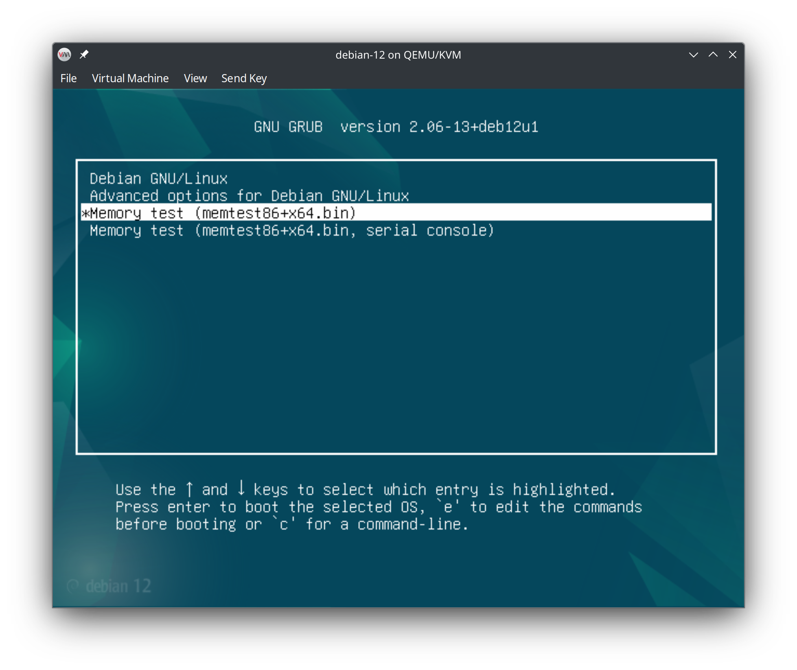
Подготовка USB-флешки на Linux
Если Вы уже знакомы с Ventoy, то отличный способ подготовки флешки – закинуть образы ISO с сайта Memtest86+ на флешку. Но рассматривать подготовку флешки с Ventoy в этой заметке я не буду.
В простом же случае, когда флешки с Ventoy у Вас нет, достаточно загрузить один из образов Memtest86+. Для 64-х битной системы или 32-х битной. Комбинированного образа, как тот, что подготавливается установщиком на Windows, для Linux официально не поставляется.
Как понять, какой образ нужен? Правило большого пальца: если компьютер, на котором требуется проверка, был выпущен после 2010 года, то Вам, скорее всего, нужен 64-х битный вариант. Но иногда попадаются нетривиальные случаи. У меня есть Asus X205TA, нетбук 2015 года, у которого процессор является 64-х битным, но вот UEFI и загрузчик работают только в 32-х битном режиме.
Поэтому, в целом, рекомендую пользоваться простым алгоритмом:
- Пробуйте сначала 64-х битный образ.
- Если не сработало, то пробуйте 32-х битный.
Образы находятся в разделе Download на сайте Memtest86+.
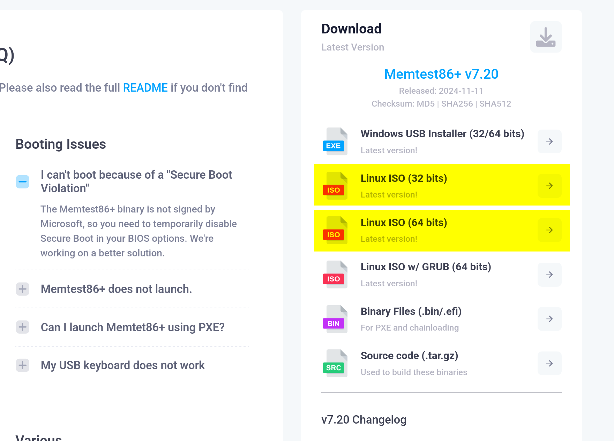
После загрузки вставляем USB-флешку в порт.
Чтобы найти устройство, соответствующее флешке, пользуемся ls:
$ ls -1 /dev/disk/by-id/usb-*
/dev/disk/by-id/usb-TwinMOS_MOBILE_DISK-0:0
/dev/disk/by-id/usb-TwinMOS_MOBILE_DISK-0:0-part1
/dev/disk/by-id/usb-TwinMOS_MOBILE_DISK-0:0-part2
Видно, что есть корневое устройство usb-TwinMOS_MOBILE_DISK с двумя разделами (part-1 и part-2). Других устройств нет. Если у Вас есть больше одного USB-диска, то сначала нужно понять, какое из них целевая флешка, дабы не повредить ценные файлы.
Все данные на USB-флешке будут стёрты в процессе записи Memtest86+! Сделайте копию данных на компьютер, чтобы не потерять важные файлы!
Самый простой способ записать образ – с помощью cp. Для 64-х битного ISO типичный сценарий записи будет такой (для 32-х битного ISO меняется только названия архива, вместо *_64.iso* будет *_32.iso*):
$ unzip mt86plus_7.20_64.iso.zip
Archive: mt86plus_7.20_64.iso.zip
inflating: memtest.iso
$ sudo cp memtest.iso /dev/disk/by-id/usb-TwinMOS_MOBILE_DISK-0\:0
$ sync
Т.е.: сначала распаковываем образ из ZIP архива с помощью unzip, копируем его в корень устройства (а не раздел!) с помощью cp и принудительно синхронизируем ФС с помощью sync.
Не вынимайте флешку из порта, пока не завершилась работа
cpиsync!
После успешного завершения sync можно будет вытаскивать флешку из USB-порта. На этом подготовка USB-флешки на Linux завершена, переходим к запуску.
Запуск MemTest86+ и интерпретация результатов
Единого стандарта на выбор загрузочного устройства на любом компьютере на сегодняшний день нет. Если загрузиться с USB-флешки как в примере ниже не получается, то хорошая альтернатива – погуглить модель Вашего устройства и/или полистать пользовательскую инструкцию.
Выключаем компьютер. Если Вы подготавливали USB-флешку, то вставляем её. Запускаем ПК и нажимаем на какую-то кнопку для выбора устройства, с которого будет загружаться система. В моём случае (на MSI, Gigabyte, Asus или HP) работает ESC, F2 или F8. Выглядит интерфейс, например, так:
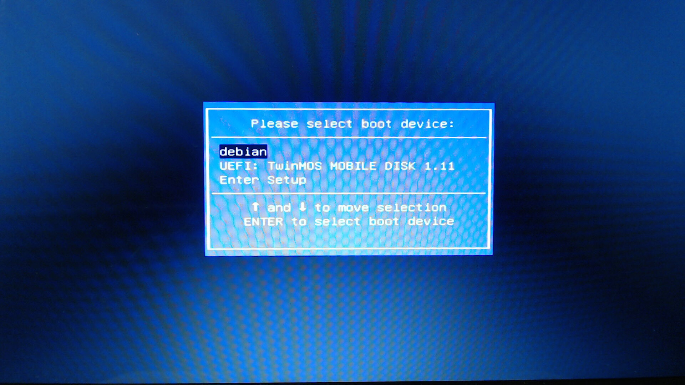
Если в списке устройств для загрузки нет флешки, но её видно в операционной системе, у Вас может быть отключена загрузка с внешних носителей. Тогда нужно зайти в BIOS/UEFI (у меня это кнопка Del при старте или вариант Enter Setup на фото выше) и включить опцию загрузки с USB-флешек. Эта фича обычно оформлена в виде порядка загрузки. На X205TA опции BIOS в разделе Boot выглядят так:
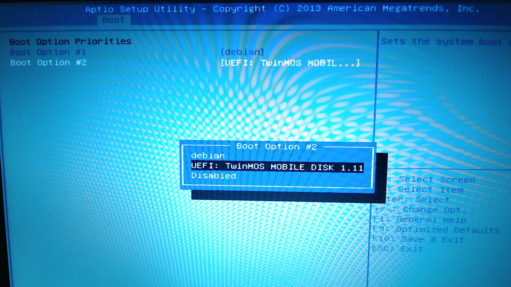
Кроме всех указанных сложностей, часто можно столкнуться с подобным сообщением об ошибке при выборе USB-флешки с Memtest86+ для загрузки:
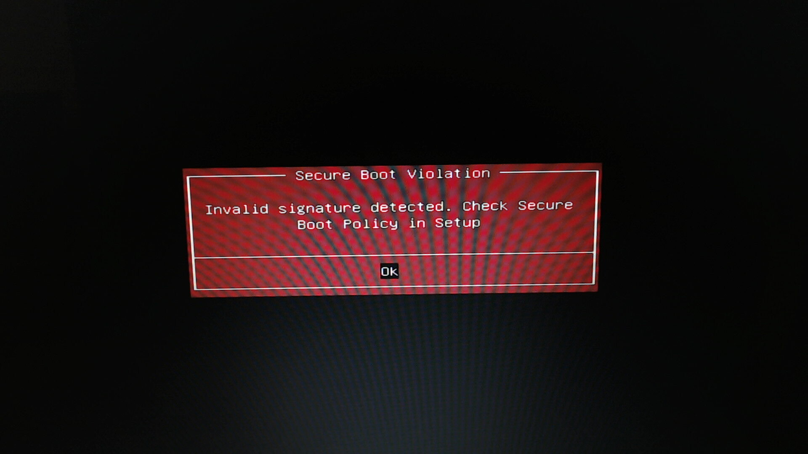
Решается эта проблема временным отключением Secure Boot в настройках BIOS/UEFI. Такая опция находится, обычно, в настройках загрузки или безопасности. После завершения работы с Memtest86+, Secure Boot имеет смысл снова включить. У меня экран с опцией Secure Boot Control находится в разделе Security и выглядит следующим образом:
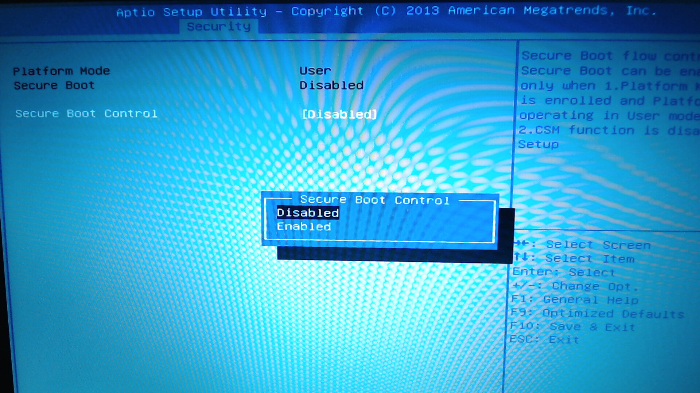
Иных проблем с запуском я не встречал, поэтому переходим к разбору интерфейса.
В процессе работы выглядит Memtest86+ следующим образом. Мучить отвратными фото больше не буду, посмотрим на скриншот VM с выделенными точками интереса:
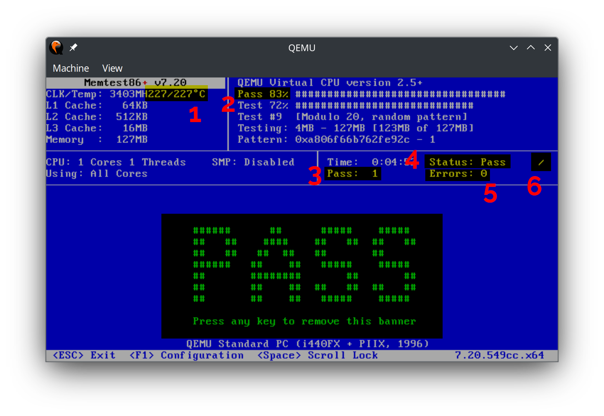
Пройдём по порядку:
- Температура. На скриншоте она ошибочно определена как 227°C. В реальности это хороший индикатор перегрева процессора. Если температура меньше 90°C, то, обычно, всё окей. Если больше – стоит задуматься о замене термопасты.
- Процент завершения одного целого набора тестов. Смотреть на прогресс отдельных тестов значимого смысла нет, какие-то слишком быстрые, а какие-то слишком медленные.
- Сколько полных наборов тестов завершено. В данном случае один. Больше тестов завершено без ошибок – больше уверенности в стабильности системы и RAM.
- Статус тестирования.
Passзначит, что пока всё нормально.Fail– что обнаружены ошибки. - Если в процессе тестирования найдены ошибки, то тут будет общее количество ошибок за этот сеанс Memtest86+.
- Индикатор проводимой работы. Слэш крутится, чтобы визуально отобразить работу. Если он стоит на месте, а другие индикаторы из списка никак не изменяются, вполне вероятно, что Memtest86+ завис. Обычно это происходит из-за дефектов компьютера, а не самого Memtest86+.
Глобальная цель тестирования – получить как можно больше успешно завершённых полных наборов тестов (Pass, индикатор (3)), насколько это возможно. В целом, всё зависит от Вашего свободного времени и необходимостей.
Я целюсь в значение от 5 до 10 успешных прогонов в зависимости от ситуации. Если я тестирую RAM после разгона, то буду ожидать до 10-и успешных прогонов без ошибок. Если просто проверяю в рамках общей диагностики, то ограничусь и 5-ю.
Если на ПК ошибки появляются даже на первом прогоне тестов, то, с огромной вероятностью, RAM дефективна или крайне нестабильна на тех настройках, которые выставлены материнской платой. Если Вы занимались разгоном, нужно сбросить настройки BIOS по-умолчанию. Если же разгона не было и RAM у Вас уже давно, вполне вероятно, что она стала дефективной.
В целом, тестирование RAM с помощью Memtest86+ поможет проявить ошибки, связанные с оперативкой. Но такая диагностика, к сожалению, не скажет об истинном источнике ошибок. Проблемы могут быть не только с самой RAM, но и, например, с процессором, материнской платой или даже с системой питания.
По крайней мере, диагностика подскажет, можете ли Вы быть уверены в своей RAM сейчас AS-IS или нет. Я же, чаще всего, и хочу получить ответ на такой вопрос.